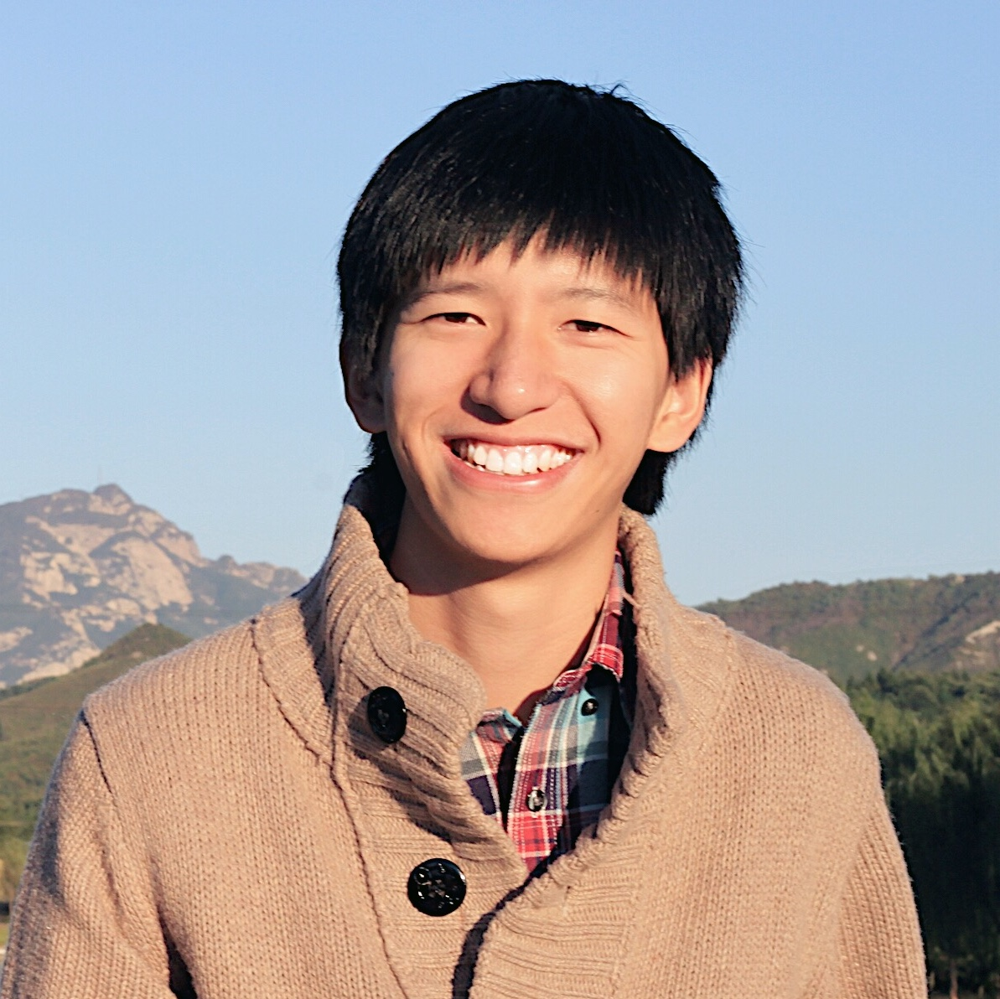

We are a dedicated research collective operating at the intersection of deep learning, linguistics, and healthcare. Our mission is to bridge the gap between high-resource and low-resource languages, ensuring equitable access to advanced AI.
By blending rigorous academic methodology with modern engineering, we create systems that don't just process text, but comprehend context, nuance, and intent at an unprecedented scale.
Photo by Emilipothèse on Unsplash
Developing a nationwide, versatile foundation health model using Finland's national health databases for clinical decision support, individual disease prevention, and policy simulations.
Developing next-generation AI systems for pathology, treatment optimization, and automated clinical decision-making.
Advancing automated mental health analysis through domain-specific LLMs, emotional analysis, and resource-driven modeling.
Multilingual NLP for low-resource languages, ensuring global applicability of language technology.
Advancing clinical information management through automated medical coding, patient outcome prediction, and biomedical reasoning.
Compiling the MaLA bilingual translation corpus and evaluating the EMMA Llama 3 suite of models adapted to 500+ languages.
A comprehensive open-access suite featuring a 74B-token corpus across 939 languages and the EMMA-500 model.
Generating synthetic linguistic reasoning traces from UD treebanks, dictionaries, and grammar rules for low-resource machine translation.
Investigating the efficacy of inference-time computation in machine translation across diverse benchmarks and reasoning scenarios.

Principal Investigator
ELLIS Institute Finland & University of Turku
NLP & AI for Health
Doctoral Researcher
University of Helsinki (Co-supervision with Jörg Tiedemann)
Multilingual NLP
MSc Student
Aalto University
AI for Health
MSc Student
University of Turku
Multimodal AI
MSc Student
University of Turku
AI Agents